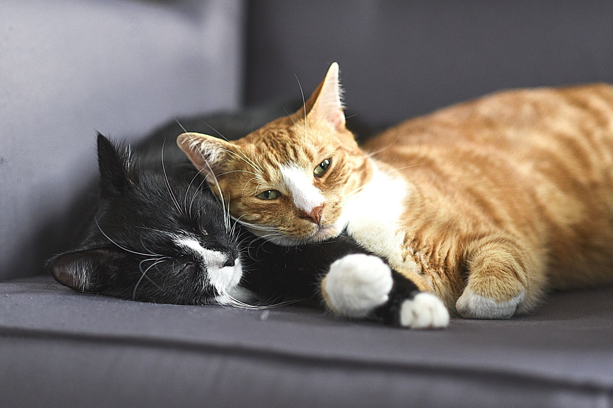
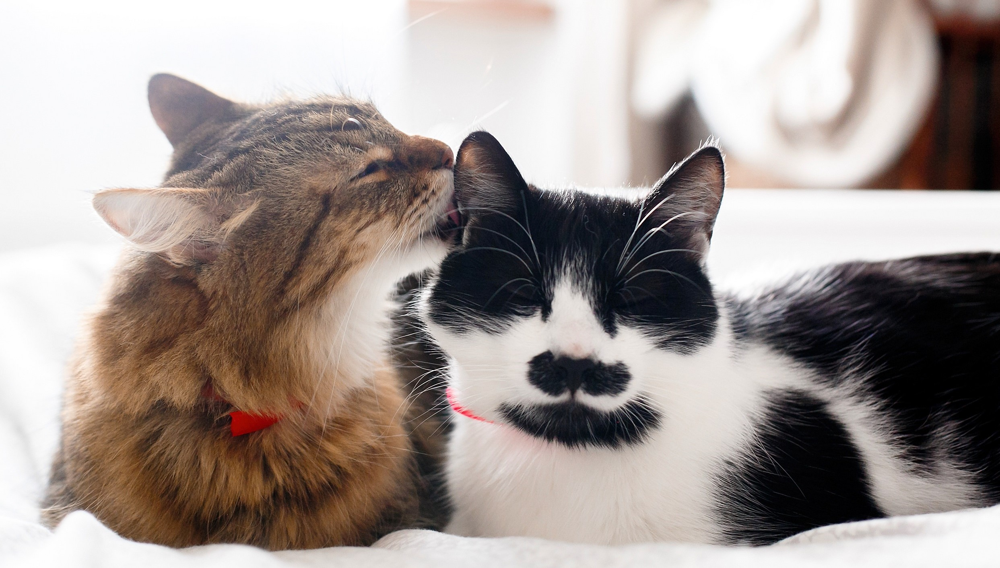
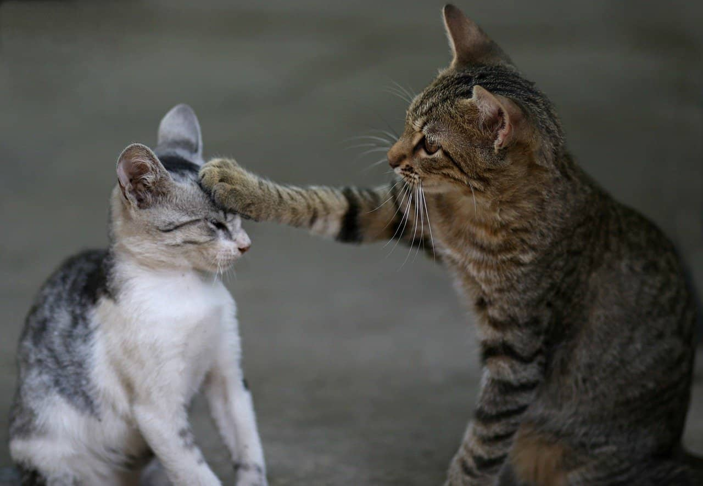

Który wybór będzie lepszy – Kot, czy kotka?



Kot
Kotka
Zachowanie kota
Kocury, z racji zadań, jakie stawia przed nimi natura, mogą być bardziej agresywne, ale nie muszą tego okazywać w stosunku do człowieka. Najczęściej wdają się w bójki z innymi kotami. Ich długie eskapady, odbywane także w poszukiwaniu partnerki, mogą zagrażać jego zdrowiu i narażać go na wiele niebezpieczeństw. Z kolei koty, które nie są wypuszczane z domu, mają skłonności do uciekania. Inną niedogodnością dla domowników jest znaczenie moczem wszystkich kątów przez kota, spędzającego życie w domu człowieka. Zapach, pozostający po tego rodzaju naturalnym i instynktownym zachowaniu, jest bardzo charakterystyczny i trudny do wywabienia. Jeśli kot nie bierze udziału w hodowli, można się zastanowić nad kastracją kocura.Zachowanie kotki
Poza czasem rui, kotka nie wykazuje zachowania podobnego do kocurów. Jednak, kiedy nastanie ruja, nawoływanie przez kotkę partnerów może być męczące dla domowników i otoczenia. Inne czynności, jakie kotki wykonują w tym czasie, to unoszenie ogona i zadu, ocieranie się o wszystkie napotkane przedmioty, tarzanie się. Niepokój opiekuna może wzbudzić także stan wyczerpania kotki. Powodowany jest on niespaniem oraz niejedzeniem. Kotki w rui mogą także uciekać, wykorzystać chwilę nieuwagi właściciela. Niektóre z nich mogą też znaczyć teren moczem. Jego zapach nie jest jednak tak wyczuwalny i intensywny dla człowieka, jak mocz kocurów.Jak odróżnić?
Ujście układu trawiennego, czyli odbyt, znajduje się na tej samej wysokości zarówno u kocura, jak i u kotki. Natomiast ujście układu moczowo-płciowego znajduje się na różnej wysokości u obu płci. Posiada też inny kształt. U kotek pionowa kreska, oznaczająca wejście do pochwy, znajduje się tuż pod odbytem. U kocurów natomiast ujście jest bardziej okrągłe i znajduje się znacznie niżej: ok. 1,5 cm u kociąt oraz ok. 2,5 cm u dorosłych kocurów.